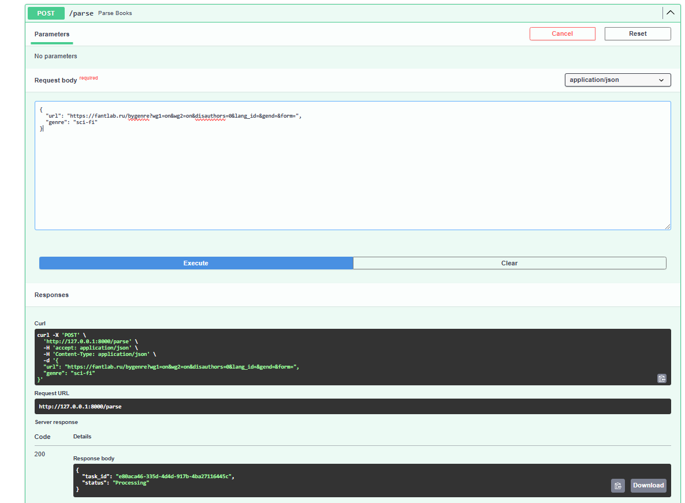
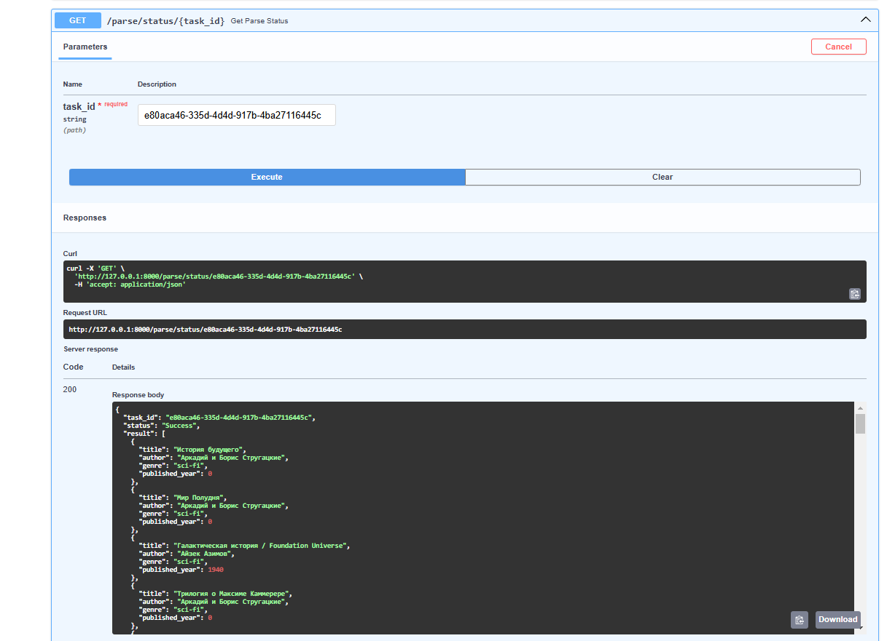

Offer
Подзадача 1: Упаковка FastAPI приложения, базы данных и парсера данных в Docker API и парсер из предыдущих лабораторных работ были разделены на 2 проекта, для каждой системы был написан docker файл, который описывает контейнеризацию приложения
Вот пример для API
FROM python:3.11-slim
WORKDIR /app
COPY requirements.txt .
RUN apt-get update && apt-get install -y libpq-dev gcc python3-dev
RUN pip install --no-cache-dir -r requirements.txt
COPY . .
CMD ["uvicorn", "main:app", "--host", "0.0.0.0", "--port", "8000"]
Далее был реализован docker-compose.yml, в котором были указаны связи м/у сервисами и установлены параметры базы данных.
version: '3.8'
services:
parser-service:
build:
context: ./parser-service
ports:
- "8001:8000"
networks:
- app-network
main-service:
build:
context: ./main-service
ports:
- "8000:8000"
depends_on:
- db
- parser-service
- redis
environment:
- DATABASE_URL=postgresql://postgres:1234@db:5432/warriors_db
- PARSER_SERVICE_URL=http://parser-service:8000/parse
- SECRET_KEY=your_secret_key
- ALGORITHM=HS256
- CELERY_BROKER_URL=redis://redis:6379/0
networks:
- app-network
celery-worker:
build:
context: ./main-service
command: celery -A celery_worker.celery_app worker --loglevel=info
depends_on:
- redis
- main-service
- parser-service
environment:
- CELERY_BROKER_URL=redis://redis:6379/0
networks:
- app-network
redis:
image: redis:7
ports:
- "6379:6379"
networks:
- app-network
db:
image: postgres:15
environment:
POSTGRES_USER: postgres
POSTGRES_PASSWORD: 1234
POSTGRES_DB: warriors_db
ports:
- "5432:5432"
volumes:
- pgdata:/var/lib/postgresql/data
networks:
- app-network
networks:
app-network:
volumes:
pgdata:
Подзадача 2: Вызов парсера из FastAPI ** Эндпоинт в FastAPI для вызова парсера**: Необходимо добавить в FastAPI приложение ендпоинт, который будет принимать запросы с URL для парсинга от клиента, отправлять запрос парсеру (запущенному в отдельном контейнере) и возвращать ответ с результатом клиенту. Зачем: Это позволит интегрировать функциональность парсера в ваше веб-приложение, предоставляя возможность пользователям запускать парсинг через API.
В сервисе с парсером был реализован роут, который принимает ссылку и жанр и на основе этих данных выводит книги со спаршенной страницы
from fastapi import FastAPI, HTTPException
from pydantic import BaseModel
from typing import List
from parser import parse_books_from_url
app = FastAPI()
class ParseRequest(BaseModel):
url: str
genre: str
@app.post("/parse", response_model=List[dict])
async def parse_endpoint(req: ParseRequest):
try:
books = parse_books_from_url(req.url, req.genre)
return books
except Exception as e:
raise HTTPException(status_code=500, detail=str(e))
Подзадача 3: Вызов парсера из FastAPI через очередь
Для связи с API и парсера был использован брокер сообщений, который позволяет асинхронно их обрабатывать в фоне, тем самым не блокируя всю программу
celery_worker реализует очередь задач, которая реализует парсинг
import os
from celery import Celery
import httpx
celery_app = Celery(
"worker",
broker="redis://redis:6379/0",
backend="redis://redis:6379/0"
)
PARSER_SERVICE_URL = os.getenv("PARSER_SERVICE_URL")
@celery_app.task
def parse_books_task(url: str, genre: str):
payload = {"url": url, "genre": genre}
try:
response = httpx.post(PARSER_SERVICE_URL, json=payload)
response.raise_for_status()
return response.json()
except Exception as e:
return {"error": str(e)}
После инициализации celery внедряется в основной сервис
@app.post("/parse")
async def parse_books(request: ParseRequest):
task = parse_books_task.delay(request.url, request.genre)
return {"task_id": task.id, "status": "Processing"}
@app.get("/parse/status/{task_id}")
async def get_parse_status(task_id: str = Path(...)):
task_result = AsyncResult(task_id, app=parse_books_task.app)
if task_result.state == "PENDING":
return {"task_id": task_id, "status": "Pending"}
elif task_result.state == "SUCCESS":
return {"task_id": task_id, "status": "Success", "result": task_result.result}
elif task_result.state == "FAILURE":
return {"task_id": task_id, "status": "Failure", "error": str(task_result.result)}
else:
return {"task_id": task_id, "status": task_result.state}
Проверим работу в swagger по ссылке http://127.0.0.1:8000/docs Запросим парсинг сайта по ссылке

По id задачи можно проверить состояния выполнения парсинга и вывод